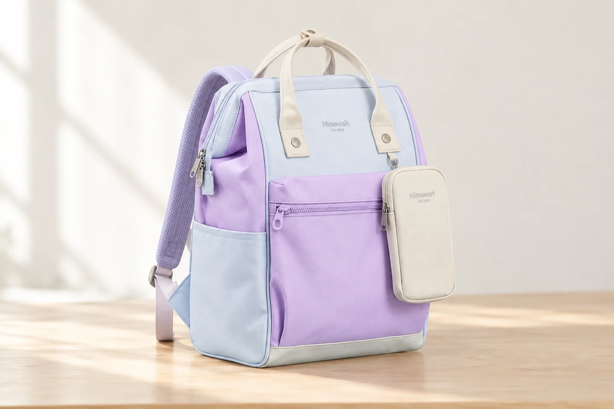

새 백팩을 받으면 주문한 옵션부터 나란히 보기

새 백팩을 받으면 평소 쓰던 물건부터 옮기고 싶어집니다. 그전에 주문 내역과 받은 제품을 나란히 놓아보면 무엇을 확인해야 하는지 분명해집니다. 모델과 선택 옵션, 포함 품목을 대조하는 시간과 실제로 짐을 넣는 시간을 나누어봅니다. 처음 발견한 상태를 설명할 일이 생겨도 어느 단계에서 보았는지 알아보기 쉽습니다.
포장을 열 때는 안쪽 제품이 어느 위치에 있는지 먼저 봅니다. 날이 있는 도구를 사용한다면 제품에 닿지 않도록 현재 위치를 확인하며 엽니다. 작은 구성품이 포장이나 접힌 종이 사이에 남았는지도 살펴보세요. 확인이 끝날 때까지 라벨과 안내문, 포장재는 한쪽에 모아두면 무엇을 받았는지 다시 대조할 자료가 남습니다.
대표 사진보다 내가 주문한 옵션
주문 내역에서 모델 번호와 색상, 크기 구분, 세트 여부를 읽습니다. 비슷한 이름의 다른 옵션과 섞이지 않도록 끝부분의 표기까지 확인합니다. 실제 받은 제품의 안내나 표기와 대조하고 불명확한 것은 문의할 항목으로 남깁니다. 이미지의 인상이 비슷하다는 이유만으로 주문한 것과 같다고 생각하지 않습니다.
상품 사진에 보였던 소품이 모두 포함되는 것은 확인된 품목인지 따로 봐야 합니다. 구매한 옵션의 포함 항목과 실제 받은 물건을 하나씩 연결합니다. 어떤 물건이 구성품인지 애매하면 먼저 해당 옵션의 설명을 찾습니다. 바로 누락이라고 단정하거나 원래 없는 품목이라고 넘어가기보다 확인할 내용을 정확히 적어 문의할 수 있습니다.
새 가방을 살펴볼 제품 자료로 Himawari No.1027을 함께 소개합니다. 같은 모델을 고르더라도 실제 주문 옵션과 제공된 안내가 비교 기준입니다. 확인할 때는 받은 물건을 빈 상태로 놓고 주문한 내용과 연결해보세요. 제품을 보기 위해 꺼낸 안내문과 작은 품목도 같은 묶음에 두면 수령 상태를 설명하기 편합니다.

대조할 항목이 여러 개라면 간단히 적어둘 수 있습니다. 모델과 옵션, 포함 품목, 확인이 필요한 상태를 각각 나눕니다. 무엇을 못 찾았는지와 어떤 부분이 다르게 보이는지를 같은 항목으로 쓰지 않습니다. 문의할 때 제품이 다른 문제인지 구성품 확인인지 알아볼 수 있어야 필요한 답을 받기 쉽습니다.
빈 가방일 때 보이는 상태
내용물을 넣기 전에 정면과 뒷면, 바닥과 안쪽을 순서대로 봅니다. 지퍼나 여밈을 사용 안내에 맞춰 열고 닫아볼 수 있습니다. 무리 없이 조작되는지, 눈에 보이는 이상이 있는지 현재 상태를 관찰합니다. 장식이나 실밥이 거슬린다고 즉시 자르거나 떼기보다 어느 부분인지 먼저 기록하고 필요한 안내를 확인합니다.
확인할 부분이 있다면 전체 모습과 위치를 알아볼 사진을 남깁니다. 가까운 사진만 있으면 어느 부위인지 설명이 어려울 수 있습니다. 자신의 관찰을 적고 원인을 확정하지 않습니다. 구매처에 문의할 때는 주문 옵션과 받은 제품 정보, 발견한 상태를 함께 전하면 됩니다. 문의나 처리 절차는 해당 구매처의 실제 안내를 따릅니다.
상태 확인이 끝나지 않았다면 사용을 서두를 이유가 없습니다. 제품을 바꾸는 조치를 먼저 하면 처음 본 모습과 이후 모습을 구분할 필요가 생깁니다. 안내를 받은 범위에서 다음 단계를 정하고 확인된 것과 아직 남은 질문을 나눕니다. 사진에 보이는 특징을 모두 기능이나 결함으로 해석하기보다 실제 안내와 대조합니다.
평소 짐으로 첫 사용 준비
받은 제품이 주문 내용과 맞고 필요한 상태 확인을 마쳤다면 평소 쓰는 물건부터 조금씩 넣어봅니다. 자료와 기기, 케이스를 포함한 실제 묶음으로 비교하세요. 들어가는지와 다시 꺼낼 동작이 가능한지는 각각 봅니다. 입구에 맞추려고 종이나 기기를 구부리거나 무리하게 밀어 넣지 않습니다.
처음에는 물건 위치를 모두 새로 정해야 할 수 있습니다. 지갑과 열쇠처럼 자주 쓰는 것부터 돌아갈 자리를 고릅니다. 여러 주머니를 한꺼번에 채우기보다 어디에 무엇이 있는지 알 수 있는 배치를 시도할 수 있습니다. 한 물건을 꺼내며 다른 짐이 따라 나오는지 직접 해보고 필요하면 묶음을 바꿉니다.
가방을 닫고 제품의 착용 안내에 맞춰 메어봅니다. 조절 가능한 부분은 실제 안내에 따라 다룹니다. 평소 옷차림에서 메고 벗는 동작과 물건을 꺼내는 순서도 볼 수 있습니다. 잠깐의 사용이 모든 조건을 확인한 결과는 아니므로 실제로 관찰한 범위를 남기고 이후 사용할 때도 현재 상태를 살펴봅니다.
제품 질문과 배치 질문 구분하기
사용 중 궁금한 점이 생기면 제품 상태에 관한 질문인지 자신의 짐 배치에 관한 질문인지 나누어봅니다. 여밈이 빈 상태에서 어떻게 움직였는지, 어떤 물건을 넣은 뒤 달라졌는지 기록할 수 있습니다. 원인을 모르면 확인한 조건만 설명하고 답을 받아봅니다. 사용 안내와 필요한 공간 정보를 함께 보면 비교할 부분이 구체적입니다.
첫 외출에서는 꼭 필요한 묶음으로 시작할 수 있습니다. 새 가방의 모든 공간을 채워야 할 필요는 없습니다. 사용한 물건을 원래 위치로 돌려놓고 귀가하면 안쪽과 바닥, 밖에 놓인 소품의 상태를 봅니다. 오늘 사용하지 않은 묶음과 꺼내기 어려웠던 위치를 남기면 이후 배치를 고칠 자료가 됩니다.
다음 준비에서는 주문 대조를 끝낸 기록과 실제 사용 메모를 구분해 둡니다. 어떤 제품을 받았는지 확인한 사실은 첫 단계의 자료로 남고, 어디에 무엇을 둘지는 사용하며 바뀔 수 있습니다. 받은 가방을 빈 상태로 보고 평소 짐을 넣어 다시 꺼내는 순서를 나누어 진행하세요. 안내문과 현재 질문이 함께 남아 있으면 이후에도 필요한 정보를 찾아볼 수 있습니다.